REVUE MÉTHODE
http://revuemethode.org
Merci pour votre message !
par Olivier MENUT
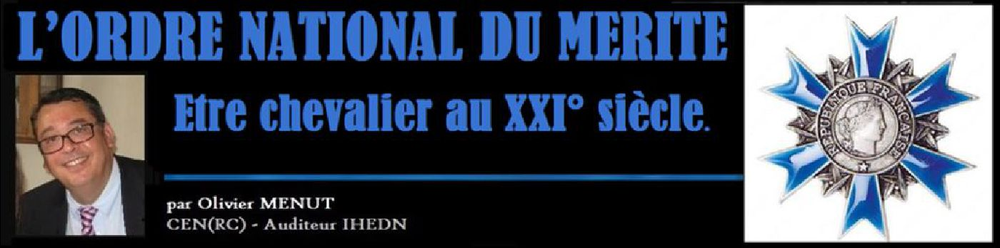
Paradoxalement l’Ordre National du Mérite créé le 3 décembre 1963, et dont nous venons de fêter le 53ème anniversaire, n’a que le 4ème rang dans l’ordre protocolaire des décorations françaises.
Cette situation est due au fait que l’Ordre National de la Légion d’honneur est le plus ancien des ordres français actuels, créé par Napoléon Ier en 1802 et occupe donc la 1ère place. Par la suite Napoléon III (neveu de Napoléon Ier) instaurera en 1852 une médaille militaire pour les soldats, qui prit alors la 2ème place protocolaire car elle fut vite qualifiée de « Légion d’honneur des soldats ». Mais la création de l’ordre de la Libération par le général de Gaulle en 1940 bouleversera cet ordre établi en se positionnant en 2ème position, la médaille militaire étant alors reléguée en 3ème position. Aussi c’est bien légitimement que l’ordre national du Mérite occupera la 4ème position lors de sa création (mais on aurait pu tout aussi bien décider de le mettre en 3ème position, la médaille Militaire n’étant pas un ordre et ne comptant qu’une seule classe).
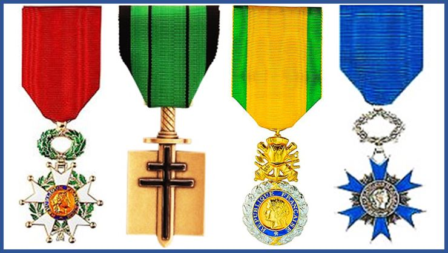
1 – En remplaçant par un seul et même ordre tous les anciens ordres ministériels qui s’étaient créés au fur et à mesure des III° et IV° républiques au début du XXème siècle, créant ainsi un certain « maquis phaleristique ».
2 – En ouvrant l’attribution de l’ONM à des récipiendaires plus jeunes et dont les mérites ne sont plus « éminents » mais « distingués ». On pourrait ajouter aussi que l’ordre fut beaucoup plus ouvert aux femmes (Nb sur les promotions civiles) que ne l’était l’ordre de la Légion d’Honneur, et surtout depuis la loi sur la parité féminine publiée en 2014.
Enfin, le général de Gaulle voulait donner un véritable ordre de Mérite à la France qui couvrit toutes les facettes civiles et militaires de notre pays.
Le décret de création de l’ordre national du Mérite comporte à lui seul une particularité historique puisqu’il porte les signatures de trois présidents de la République française. Il est en effet, signé du président en exercice Charles de Gaulle (1959-1969), du Premier ministre Georges Pompidou, son successeur (1969-1974) et du ministre des Finances Valéry Giscard d'Estaing (1974-1981), lui–même successeur de Pompidou !. Cela montre bien le consensus sur ce nouvel ordre national. Tous trois étaient intimement convaincus qu’il convenait de substituer aux 17 ordres ministériels ou coloniaux alors attribués aux ressortissants français et étrangers, un seul et même ordre de mérite, basé sur des distinctions plus larges et non plus sur de simples considérations corporatives.
La plupart de ces anciens ordres étaient le reflet d’une politique ministérielle - datant du milieu du XX° siècle (1936 à 1958) – et destinée à assoir la légitimité des titulaires des portefeuilles et d’étendre ainsi leur autorité sur leurs « administrés » par un système de récompense essentiellement sectoriel (La Poste, l’industrie, l’artisanat, le tourisme, la santé etc…). Ces ordres d’honneur ministériels reprenaient d’ailleurs pour la plupart des médailles ministérielles antérieures qui avaient été créés dès le XIX° siècle et pour les mêmes raisons (on sortait de régimes révolutionnaires, impériaux et monarchiques…).
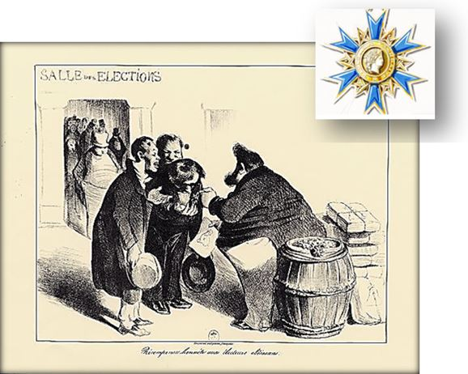
Les français n’ont jamais aimé que les distinctions fussent distribuées sans réel mérite (Caricature du XIX°)
En foi de quoi, ces anciens ordres ministériels ne furent pas dissous, mais simplement suspendus d’attribution et appelés à s’éteindre progressivement tant qu'il resterait au moins un survivant dans chaque ordre. Enfin, on notera pour l’anecdote qu’aucun des décrets qui avaient institués ces mêmes ordres ministériels n'a jamais été abrogé par d’autre texte de loi en vigueur et que rien ne s’opposerait juridiquement à ce qu’une éventuelle restauration puisse-t-être imaginée un jour… Tout fut donc élaboré, sur la base d’un rapport remis au général de Gaulle, pour que ce nouvel ordre national du Mérite soit un ordre de consensus, d’unité et de valorisation des mérites de la population française (il est naturellement également ouvert aux étrangers).
Quoi qu’il en soit, le Décret n°63-1196 du 3 décembre 1963 portant création d'un ordre national du Mérite instituait dans son article 38 que : « Les grades des ordres ci-après énumérés cesseront d'être attribués à compter du 1er janvier 1964 : Ordre du Mérite social, Ordre de la Santé publique, Ordre du Mérite commercial et industriel, Ordre du Mérite artisanal, Ordre du Mérite touristique, Ordre du Mérite combattant, Ordre du Mérite postal, Ordre de l'économie nationale, Ordre du mérite sportif, Ordre du mérite du travail, Ordre du mérite militaire, Ordre du mérite civil du ministère de l'intérieur et Ordre du mérite saharien ». L’article 38 précisait également : « Cesseront également d'être attribués à compter de la même date les grades et dignités des ordres ci-après : Ordre de l'Etoile noire, Ordre du Nichan El Anouar et Ordre de l'Etoile d'Anjouan ». Et cet article de conclure : « Les titulaires actuels des grades et dignités desdits ordres continueront à jouir des prérogatives y attachées ».
Nous reproduisons ci-après la représentation (premier grade de chevalier) des ordres ministériels concernés par l’article 38 du décret de 1963 instaurant un nouvel ordre national du Mérite.
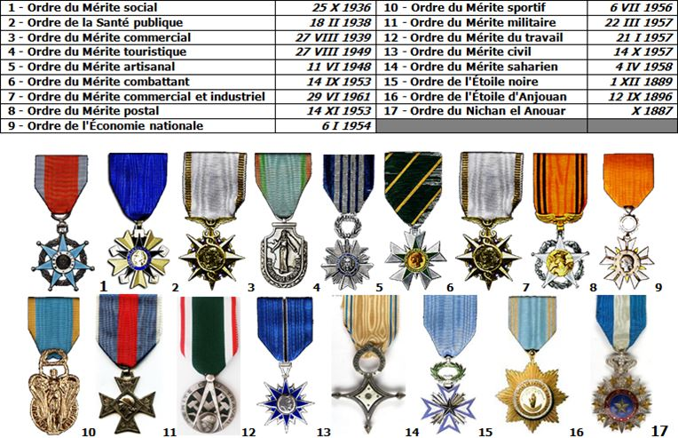
Il s’agit de :
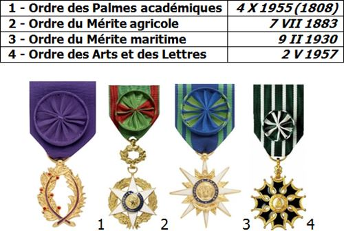
Une chose est certaine, c’est qu’il était difficile de dégager une vision d'ensemble, voire une certaine cohérence, dans les critères d’attribution des récipiendaires des anciens ordres ministériels. L’effet de mode ou la médiatisation de leurs titulaires semblaient parfois prévaloir sur des mérites qualifiés. Un certain « clientélisme » n’était pas non plus absent et certains ministres usèrent et abusèrent même parfois de cette liberté de distribuer assez largement des ordres de « leurs » ministères… En mettant un peu d’ordre dans ces ordres issus d’un autre temps, le général de Gaulle, sur proposition de son grand-chancelier de la Légion d’honneur, le général Catroux, souhaitaient redonner à la France un seul et même grand ordre (civil et militaire). Le rapporte en effet ne manque pas de rappeler que : « Le but second de la création de l'Ordre national du Mérite est d'assurer une simplification et une harmonisation du système des distinctions honorifiques en substituant à ces ordres trop nombreux un second ordre national, unique dans son principe mais diversifié dans ses attributions, afin que les mérites distingués antérieurement par les ordres secondaires ne restent point sans récompense ».
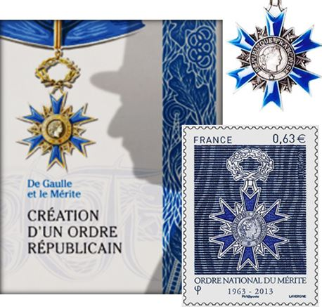
Lors de la création de l’Ordre National du Mérite en 1963, le chef de l’État, Charles de Gaulle, déclarait : « Désormais nous aurons deux Ordres, l’un rouge (la Légion d’honneur), l’autre bleu (le Mérite), aux couleurs de notre drapeau ».
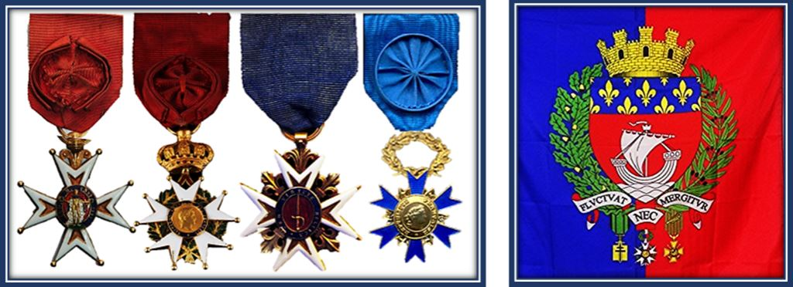
Largement inspiré de la légion d’Honneur dont il reprend l’idée d’une croix à 6 branches (au lieu des 5 de la LH), attachée à une couronne de lauriers, le graphisme même de ce nouvel ordre de la 2ème moitié du XX° siècle est relativement sobre avec son étoile d’argent ou dorée, juste émaillée de bleu roi. La plaque de grand-officier ou de grand-croix est résolument moderne et se porte comme la légion d’Honneur soit à droite avec la croix sur la poitrine gauche (grand-officier) ou à gauche avec le grand cordon porté sur l’épaule droite (grand-croix). On notera qu’à l’origine les plaques ne portaient pas d’émail bleu qui fut rajouté en 1980. Le bijou de la croix est une œuvre du sculpteur-médailleur français Max Leognany (1913-1994) qui réalisa également plusieurs modèles d’épées d’académiciens.
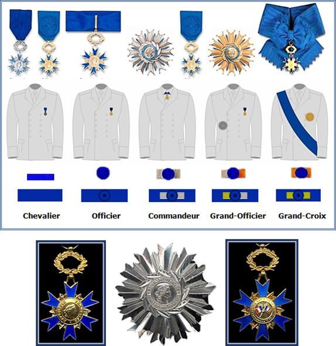
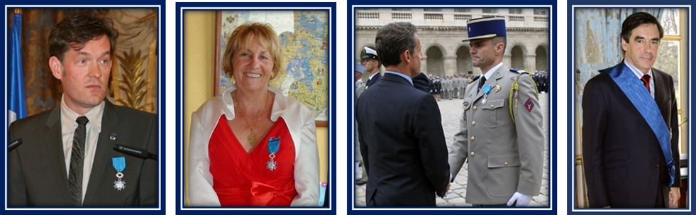L’ordre est à la fois plus jeune, très féminisé (loi sur la parité) et attribué tant à titre civil que militaire. Le Président de la République française est grand-croix de l’ordre de droit. Le Premier ministre (ici François Fillon) est également nommé grand-croix au bout de 6 mois de chef du gouvernement (premier ministre) et ce depuis le 24 décembre 1974
A l’inverse de l’Ordre national de la Légion d’honneur qui récompense des mérites « éminents », l’Ordre National du Mérite récompense des mérites « distingués ». Ces deux synonymes reposent sur des notions relativement abstraites. Selon le code de la Légion d’honneur publié le 28 novembre 1962, la Légion d’honneur est la récompense « des mérites éminents acquis au service de la nation soit à titre civil, soit sous les armes ». A l’inverse l’ONM précise dans l’article 2 du décret fondateur de 1963, qu’il est destiné à : « récompenser les mérites distingués acquis soit dans une fonction publique, civile ou militaire, soit dans l'exercice d'une activité privée ».
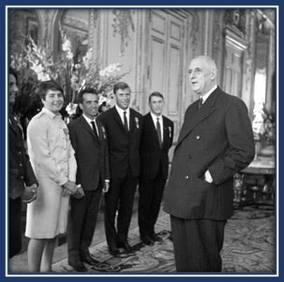
Le général de Gaulle remet les insignes du Mérite aux médaillés olympiques des jeux d’Innsbruck, à l’Elysée le 25 juin 1964 (C’était avant qu’on ne remette la légion d’honneur à des footballeurs…)
Lors d’une question posée par un sénateur français en 1997, qui demandait : « Pourquoi décerner la Légion d'honneur à des personnes dont les mérites sont plus facilement qualifiés de distingués que d'éminents », les services du Premier Ministres répondaient que « le dossier du candidat fait l'objet d'une procédure administrative rigoureuse ayant pour but d'authentifier et de vérifier les titres invoqués et de recueillir toutes garanties sur la probité et l'honorabilité des postulants. Les conseils des ordres, quant à eux, se déterminent sur la base de dossiers ainsi produits et ont pour mission de se prononcer sur leur conformité aux lois, décrets et règlements en vigueur ».
Cette réponse manque assurément de précision sémantique et laisse à penser que le distinguo entre mérites « distingués » et mérites « éminents » restent relativement tenus… même si finalement l’importance et la durée des mérites - exigeants et mesurables - inclinera sans doute le conseil de l’ordre. 15 ans de mérites distingués en moyennes sont nécessaires pour se présenter dans l’ordre (alors que le code prévoit 10 ans) et qu’il faut (au moins) 20 ans dans la Légion d’honneur. De fait, l’âge moyen d’entrée dans l’Ordre National de la Légion d’honneur est 58 ans alors que celui pour l’Ordre National Mérite est de 54 ans. L’ordre comporte deux promotions civiles : le 15 mai et 15 novembre et deux promotions à titre militaire : Les 1er mai et 1er novembre. L’ordre national du Mérite a sa propre organisation, discipline et hiérarchie, calquées sur celle de la Légion d’honneur. Il est doté d’un conseil de l’ordre spécifique, de 11 membres, présidé par le grand chancelier de la Légion d’honneur, chancelier de l'ordre national du Mérite, sous l’autorité du grand maître qui est le président de la République française.
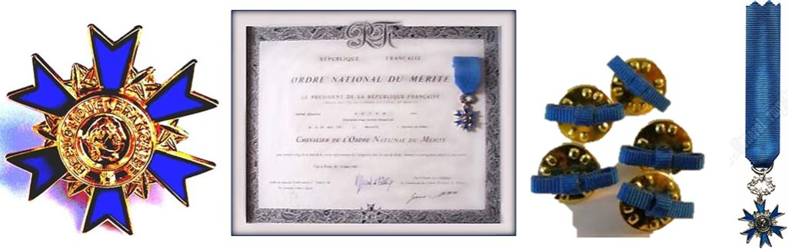
L’association nationale des membres de l’ordre national du Mérite a créée un prix du civisme pour la jeunesse (anciennement appelé « prix du civisme et de la citoyenneté »). Ce prix a pour but de contribuer au développement et au maintien des grands principes de la société française, de promouvoir le civisme et de porter en exemple la jeunesse méritante. Il est attribué en vertu d’une convention signée entre le Préfet du département, l’Inspection d’académie départementale, la Direction départementale de la sécurité publique, le groupement départemental de Gendarmerie et la section départementale de l’association nationale des membres de l’ordre national du Mérite. Ce prix a pour objet de détecter des actions réalisées par des jeunes de moins de 18 ans au profit de particuliers, de collectivités territoriales ou du devoir de mémoire qui, par « la beauté, la spontanéité et la grandeur du geste, méritent d’être valorisées par l’attribution d’un prix ». Par cette démarche l’ordre est aussi destiné à s’affilier les futurs français méritants.
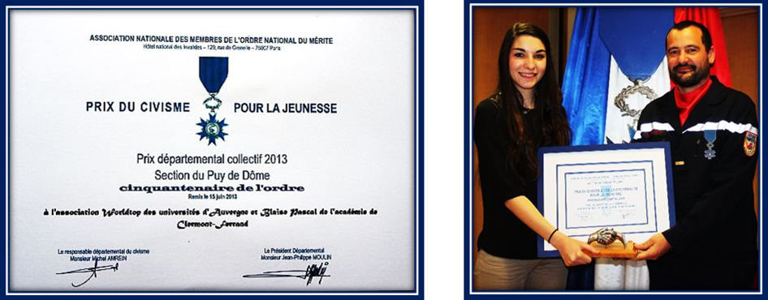
Alors que l’Ordre de la Libération va peu à peu disparaitre dans son témoignage visuel il ne reste plus que 14 compagnons sur 1038 (mais non dans les mémoires) et que la Légion d’honneur restera toujours pour la plupart des français, un honneur suprême difficilement accessible, l’Ordre National du Mérite est assurément là pour illustrer les distinctions méritantes des françaises et des français dans leurs engagements civils et militaires du quotidien.
La notion même de « Mérite » est porteuse de valeurs dans un monde où tout n’est pas acquis d’avance et où chacun à sa chance du moment qu’il s’en donne les moyens. A ce titre l’ordre national du Mérite a pris rapidement toute sa place dans le système régalien des récompenses phaleristiques nationales. L’échantillon social de l’Ordre National du Mérite est à l’image de la société française : divers, ingénieux, laborieux, courageux, entreprenant ou tout simplement dévoué aux autres.
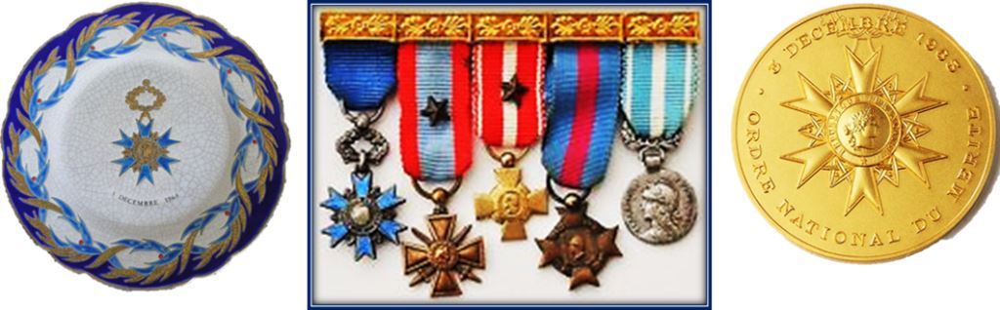
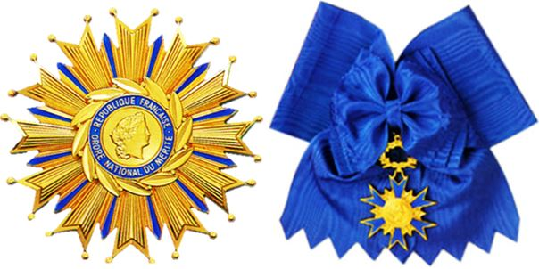
O.M.
REVUE MÉTHODE
http://revuemethode.org
Partager cette page